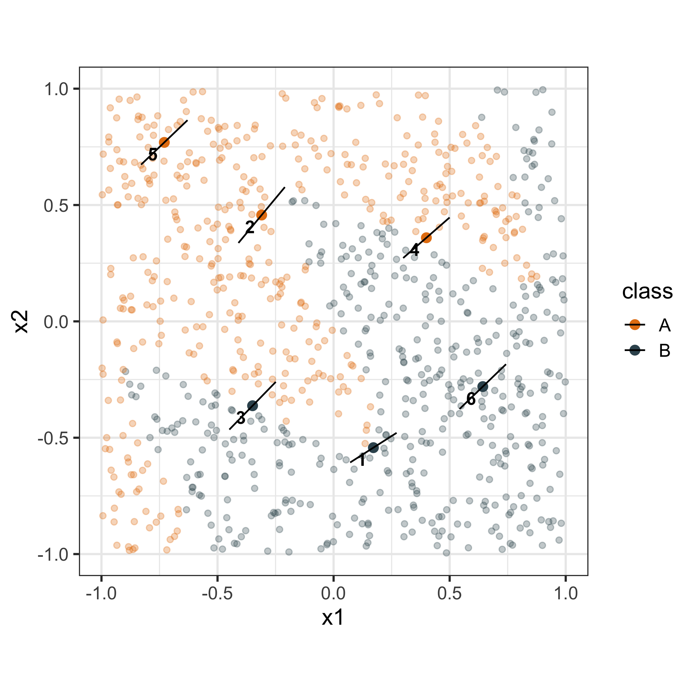
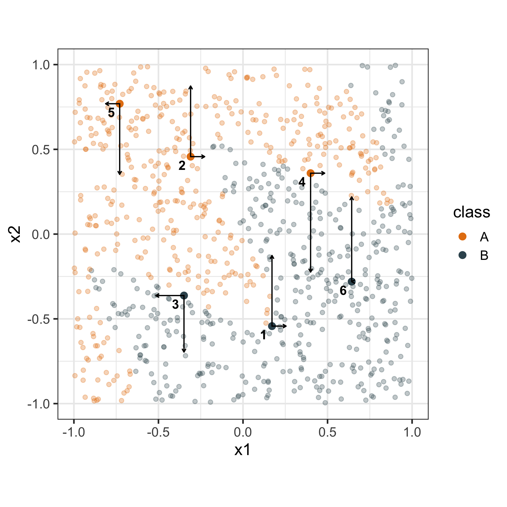
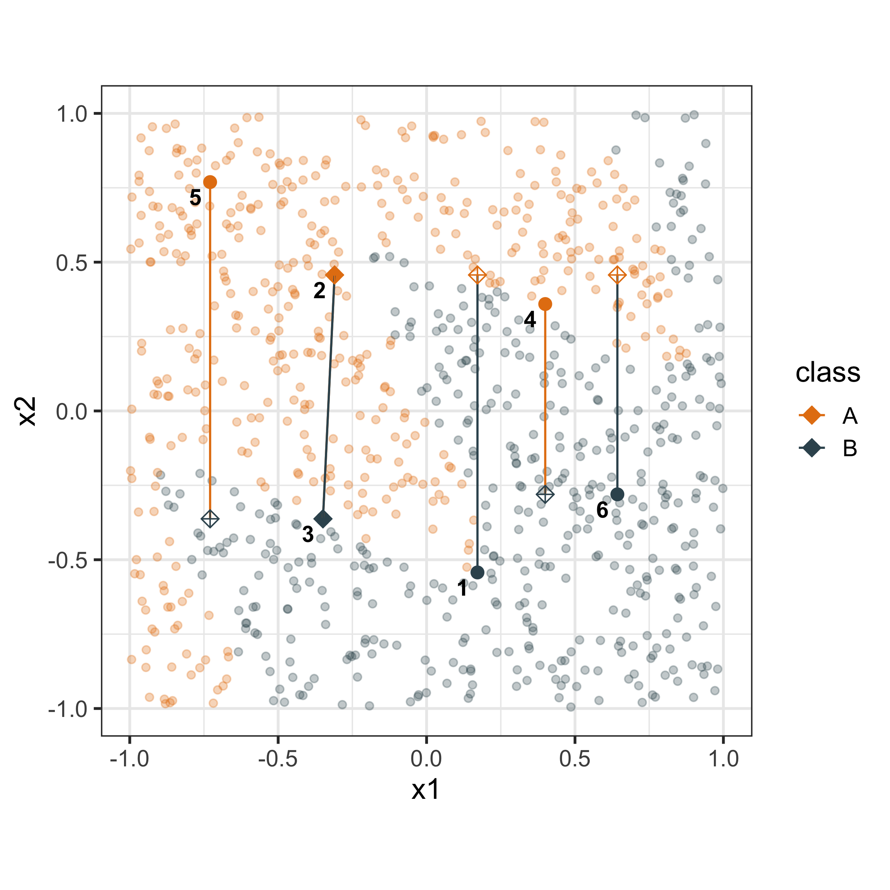
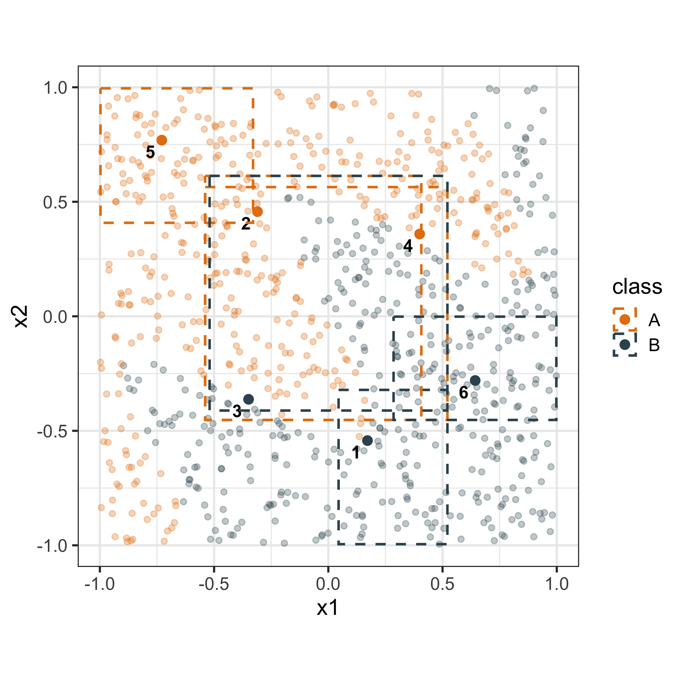
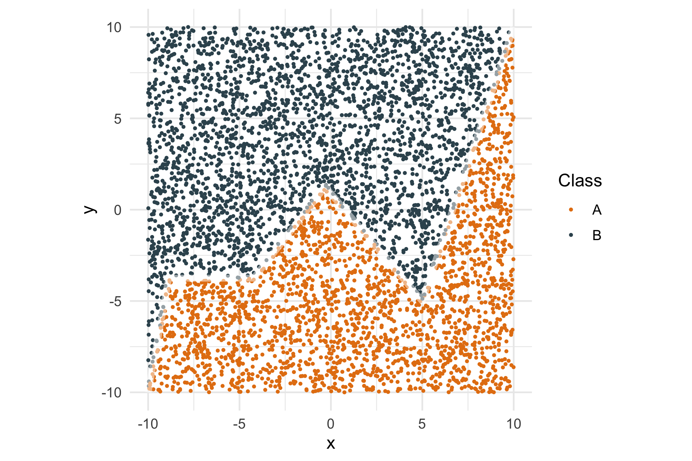

 A redwood tree stump, Janith Wanniarachchi 2025
A redwood tree stump, Janith Wanniarachchi 2025
Winning the Neural Network Lottery by Chance
How I spent an year trying to fit neural networks with the worse luck imaginableJanith Wanniarachchi
janith.wanniarachchi@monash.edu
Supervised by Prof. Dianne Cook, Dr. Kate Saunders, Dr. Patricia Menendez, Dr. Thiyanga Talagala
Let’s be honest here
Building a good model is hard
Explaining how a good model works is even harder
Exhibit A: The good model
What if you could
poke around and find out
how this model works?
poke around and find out
how this model works?
Introducing
Explainable AI (XAI) methods!
XAI has a lot of facets
XAI can help you look at
How the model reacts to different features overall using Global Interpretability Methods
How the model gives a prediction to one single instance using Local Interpretability Methods
Explaining one prediction
There are several key local interpretability methods that are related to each other in how they approach the problem
- LIME (Local Interpretable Model agnostic Explanations)
- SHAP (SHapley Additive exPlanations)
- Anchors
- Counterfactuals
But,
What if instead of looking at the numerical values of these XAI methods
we represented the numbers as a visual object within the data itself.
LIME
LIME works by trying to find the simplest model within the local neighbourhood that is as similar as possible to the original black box model. Therefore, for a given observation, the LIME explanations are the model coefficients of the interpretable model (e.g. a Generalized Linear Model)
SHAP
Similar to LIME, SHAP builds a linear model around the given observation with the features being mapped to a binary vector indicating whether the feature is included in the model or not.
SHAP is based on Shapley values which distributes a reward among cooperative players in a game. In this context the players are the features of the model and the reward is the prediction.
The coefficients of the model are then given by Shapley values and can be considered as the contribution that the given feature has towards the prediction.

Counterfactuals
A counterfactual explanation \(\boldsymbol{x}_i^{(c)}\) for a given \(\boldsymbol{x}_i\) and a desired outcome value \(y_{i}^{(\exp)}\), is defined as an observation satisfying the following conditions:
- \(y_{i}^{(\exp)} \approx f(\boldsymbol{x}_i^{(c)})\).
- \(\boldsymbol{x}_i\) and \(\boldsymbol{x}_i^{(c)}\) are close to each other in the data space.
- \(\boldsymbol{x}_i^{(c)}\) differs from \(\boldsymbol{x}_i\) only in a few components.
- \(\boldsymbol{x}_i^{(c)}\) is a plausible data point according to the distribution of each dimension.

Anchors
Anchors are defined as a rule or a set of predicates that satisfy the given instance and is a sufficient condition for \(f(x_i)\) with high probability. A predicate is a logical condition that an observation may or may not satisfy.
Finding an anchor for a given instance can be defined as the solution to the following optimization problem,
\[ \max_{\mathcal{A} \text{ s.t. } \text{Pr}(\text{Prec}(\mathcal{A}) \ge \tau) \ge 1 - \delta} \text{Coverage}(\mathcal{A}) \]
The target would then be to maximize the coverage while ensuring that the precision is above a tolerance level.

Kultarr R package
The existing implementations of Anchors were quite hard to work with and were quite slow as it was using an existing Java package.
Kultarr is an R package that aims to provide an implementation of Anchors using a simpler algorithm and a complete set of orthogonal predicates.
Try the package out from https://github.com/janithwanni/kultarr
In two dimensions,
LIME can be seen as
regression lines
SHAP can be seen as
force vectors
Counterfactuals can be seen as
connecting lines
Anchors can be seen as
boxes
Extending detourr
- Clicking on points in the detourr widget now returns the identifier.
- A proxy was created to communicate with an existing rendered detourr widget.
- Added support for adding points and edges connecting new points.
- Options to customize aesthetics of points and edges.
- Existing points can be highlighted or enlarged.
XAI explorer
Rosella R package
The current status of the XAI explorer was bundled into an R package to ensure that anyone with compute can run the Shiny app on their own servers.
rosella is an R package that allows you to run the XAI explorer locally on your laptop. It’s still under development in terms of allowing users to generate XAI explanations for their own datasets.
Try the package out from https://github.com/janithwanni/rosella
Let’s join the cult
Being agnostic is fun and all, but …
How long has it been since you last spoke to an LLM? How many of you in this room are chatting with an LLM right now?
- Deep Learning and Large Language Models have taken over most of the asepcts of our life.
- Model Agnostic XAI methods can poke and prod at the model but,
- Unless we crack open the model wide we won’t be able to tell what’s happening in these models.
So let’s fit a neural network
Simple stuff first,
Let’s take a look at the following dataset
Quick refresher on how neural networks work
All right for our dataset,
Let’s get a quick poll on what our hyperparameters should be
Known and fixed hyperparameters (for the plot)
- Number of epochs: 100
- Batch size: 71
- Loss function: Binary Cross Entropy loss
- Optimizer: Adam
- Training set size: 5,000
- Testing set size: 5,000
What shall we pick as the number of neurons in a single layer?
- 4
- 5
- 8
- 10
Join the live poll below to share your votes
So based on your results,
This is the result for a single layer neural network with,
Use simple javascript to pick up the plot with the lowest f1 and accuracy and show them here
Are we sure though?
Any guesses on what exactly happened here?
For an entire year I used the wrong seed
The random seed has an effect on how neural networks are being built
It can be due to primarily the initial weights used in the training, which has been used heavily in,
- The lotter ticket hypothesis
- Meta Learning
- And many more cases,
Cool story bro, so what?
Smaller models for small datasets
I could have chucked a 20 neuron two hidden layer neural network with 500 epochs,
But why?
Look at this dataset
Does this decision boundary need more parameters than there are bends in the decision boundary?
Fixing things before it starts
In a majority of deep learning education material very rarely is the effect of the random seed discussed.
That is why I built a tool for data science educators to educate students by trying out multiple model variants and seeing the difference
And today you get to try that out as well
As the seocnd batch of students to experience the app
Introducing
The architecture behind the app
graph TB
%% Main Application Layer
subgraph "Main Application (R/Shiny)"
%% Frontend Layer
subgraph "Frontend Layer"
UI[Fomantic UI Components]
Squiggler[Squiggler Tool<br/>Svelte → JS/CSS]
end
Shiny[Shiny Web Framework<br/>Rhino for<br/>Codebase Management]
%% Visualization Components
subgraph "Visualization Libraries"
GGPlot[ggplot2<br/>Static Plots]
Beeswarm[ggbeeswarm<br/>Plot Geometry]
Ggiraph[ggiraph<br/>Interactivity]
Gifski[gifski<br/>GIF Animations<br/>Rust-powered]
end
%% Backend Processing Layer
subgraph "Backend Processing"
Python[Python Background Tasks<br/>Model Fitting<br/>with PyTorch<br/>]
Parquet[Parquet Files<br/>for Data Transfer]
end
end
%% Data Layer
%% subgraph "Data Storage"
%% end
%% Connections
UI --> Shiny
Squiggler --> Shiny
%% Visualization connections
Shiny --> GGPlot
Shiny --> Beeswarm
Shiny --> Ggiraph
Shiny --> Gifski
%% Interactive plot creation
Beeswarm --> Ggiraph
%% Backend connections
Shiny -.->|Background Task| Python
Python --> Parquet
Shiny --> Parquet
%% Styling
classDef frontend fill:#e1f5fe
classDef rshiny fill:#f3e5f5
classDef backend fill:#fff3e0
classDef data fill:#e8f5e8
class UI,Squiggler frontend
class Shiny,GGPlot,Beeswarm,Ggiraph,Gifski rshiny
class Python,PyTorch backend
class Parquet data
The methodology behind the app
flowchart LR
A["Start: Input Decision Boundary Function f<br/>Seed Range [1, 99999]<br/>Neuron Sizes N"] --> B[Phase 1: Dataset Generation]
B --> C[Set Consistent Seed for Reproducibility]
C --> D["Generate 10,000 Samples<br/>Uniformly from [-10, 10] × [-10, 10]"]
D --> E["For Each Point (x₁, x₂)"]
E --> F["Assign Label y = f(x₁, x₂)<br/>Above/Below Boundary"]
F --> G[Create Training and Testing Datasets]
G --> H[Phase 2: Parallel Training Process]
H --> I[For Each Neuron Size n ∈ N]
I --> J["Select Random Seed s ∈ [1, 99999]"]
J --> K["For Each Seed-Neuron Combination (s, n)"]
K --> L["Initialize Single-Layer Neural Network:<br/>• Input: 2 nodes<br/>• Hidden: n neurons (ReLU)<br/>• Output: 1 node (Sigmoid)"]
L --> M[Set Network Weights Using Seed s]
M --> N["Configure Training Parameters:<br/>• Batch Size: b = ⌊√|D|⌋ = 71<br/>• Adam Optimizer: lr=0.01<br/>• Loss: Binary Cross Entropy"]
N --> O[Training Loop: 500 Epochs]
O --> P[Shuffle Training Data Using Seed s]
P --> Q[For Each Batch B of Size b]
Q --> R["Forward Pass:<br/>ŷ = σ(W₂ · ReLU(W₁ · X + b₁) + b₂)"]
R --> S[Compute BCE Loss]
S --> T[Backward Pass & Adam Update]
T --> U{More Batches?}
U -->|Yes| Q
U -->|No| V{More Epochs?}
V -->|Yes| P
V -->|No| W{More Seed-Neuron<br/>Combinations?}
W -->|Yes| K
W -->|No| X{More Neuron<br/>Sizes?}
X -->|Yes| I
X -->|No| Y[Phase 3: Model Evaluation]
Y --> Z[For Each Trained Model M]
Z --> AA[Evaluate on Testing Dataset:<br/>• Compute Predictions ŷₜₑₛₜ<br/>• Calculate F1-Score<br/>• Calculate Accuracy]
AA --> BB[Create Decision Boundary Visualization:<br/>• Generate 100×100 Grid<br/>• Apply Model to Grid<br/>• Store Boundary Predictions]
BB --> CC{More Models?}
CC -->|Yes| Z
CC -->|No| DD[Return: Models, Metrics,<br/>Decision Boundaries]
DD --> EE[End]
style B fill:#e1f5fe
style H fill:#f3e5f5
style Y fill:#e8f5e8
style A fill:#fff3e0
style EE fill:#fff3e0
Where to from here?
Attention is all you need, but did we need that much attention?
- Modern Transformers have billions of parameters, holding vast world knowledge.
- Motivating Question: Can we study simpler models to understand the fundamental computational circuits underlying reasoning and knowledge representation?
- Recent research suggests even small models can develop meaningful “circuits, interconnected features collaborating to perform specific tasks.
- [@nanda2023progress] demonstrated algorithmic circuits emerging in a 1-layer transformer trained on modular arithmetic.
- [@elhage2022toy] showed how Sparse Autoencoders (SAEs) disentangle overlapping concepts, leading to more interpretable representations.
- We will study a 1-layer transformer trained on modular arithmetic.
- Key Innovation: Integrating a Sparse Autoencoder (SAE) after the multi-layer perceptron output.
- SAE Reconstruction: Dense input reconstructed using sparse latent features.
- Gap to Fill: Lack of simultaneous visualization of training dynamics and circuit structure – particularly crucial in small, interpretable models.
- Create an interactive visualization of emerging transformer circuits using SAEs.
- Goal: Understand how even simple transformers develop reasoning structures.
- Step towards understanding larger, more complex models.
Timeline
Figure 6: Project timeline for the PhD
Thank you!
Have any suggestions or ideas?
The colour palette for these slides are inspired by the painting "Sailing Boats Returning to Yabase" by Utagawa Hiroshige, 1835 (MetBrewer R package)

Janith Wanniarachchi
janith.wanniarachchi@monash.edu
@janithwanni
janith-wanniarachchi
janithwanni.netlify.app
https://janithwanni-phd-2nd-year.netlify.app/